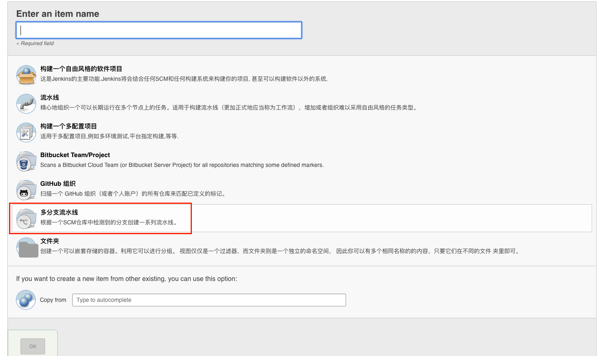
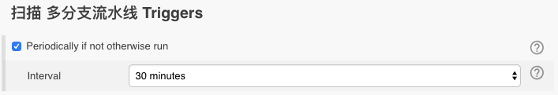

Pipeline 分支与 Pull 请求¶
在上一节一个 Jenkinsfile 可能被嵌入源代码实施控制。本节将介绍多分支 Pipeline 概念，该 Jenkinsfile 基础是在 Jenkins 提供更多动态和自动功能的基础上建立的。
创建多分支¶
多分支 Pipeline 项目类型使您可以实现不同 Jenkinsfile 在同一个项目的不同分支。在 Multibranch Pipeline 项目中，Jenkins 自动发现，Pipeline 和执行包含 Jenkinsfile 源代码控制的分支 Pipeline。
这不需要手动 Pipeline 创建和管理。
创建多分支 Pipeline:
单击 Jenkins 主页上的 New Item

输入 Pipeline 的名称，选择多 Multibranch Pipeline，然后单击确定。
Note
Jenkins 使用 Pipeline 的名称在磁盘上创建目录。包含空格的 Pipeline 名称可能会发现不希望路径包含空格的脚本中的错误。
添加分支源（例如，Git）并输入存储库的位置

保存多分支 Pipeline 项目
一旦保存，Jenkins 自动扫描指定的存储库，并为其中包含了库中的每个分支合适的项目 Jenkinsfile。默认情况下，Jenkins 不会自动重新索引存储库以进行分支添加或删除（除非使用组织文件夹），因此配置多分支 Pipeline 在配置中定期重新建立索引通常很有用。

附加环境变量¶
Multibranch Pipeline 公开了通过 env 全局变量构建的分支的附加信息，例如：
BRANCH_NAME
例如，该 Pipeline 正在执行的分支的名称
CHANGE_ID
对应于某种改变请求的标识符，例如拉取请求编号
其他的环境变量列在 “全局变量引用” 中。
支持 pull 请求
通过 “Github” 或 “Bitbucker” 分支源，多分枝 pipeline 可用于验证拉/更改请求。该功能分别由 Github 分支源 和 Bitbucket 分支源 插件提供。有关如何使用这些插件的更多信息，请查阅官方文档。
使用组织文件夹¶
组织文件夹使 Jenkins 监视整个 Github 组织或 Bitbucker 团队/项目，并自动创建包含分支和拉请求的存储库的新的多分支 Pipeline Jenkinsfile。
目前，此功能仅适用于 Github 和 Bitbucker，具有由 Github 组织文件夹 和 Bitbucket Branch Source 插件提供的功能。